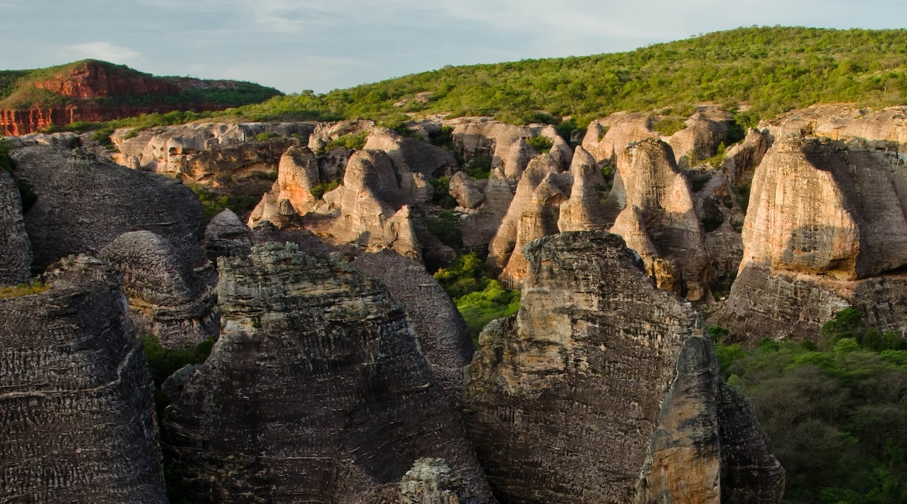

03 · Field
Fieldwork
Two hundred days in the field across UNESCO World Heritage areas — leading four expeditions from Patagonia to Tasmania.
days in field
200+
expeditions
9
led
4
countries
6
EXPEDITION MAP · 2014–2026

Tasmania
2026¹⁰Be dating of fluvial terraces.
Patagonia · Los Glaciares
2024Quantifying glacial incision with low-temperature thermochronology.

Kyrgyzstan
2023Cosmogenic ¹⁰Be dating of glacial moraines.
Patagonia · Rio Santa Cruz
2023¹⁰Be dating of river terraces & geomorphic mapping.
Iceland · Vatnajökull
2017Cosmogenic helium dating of river terraces.

Brazil · Serra da Capivara
2014Geological mapping of a UNESCO World Heritage area.